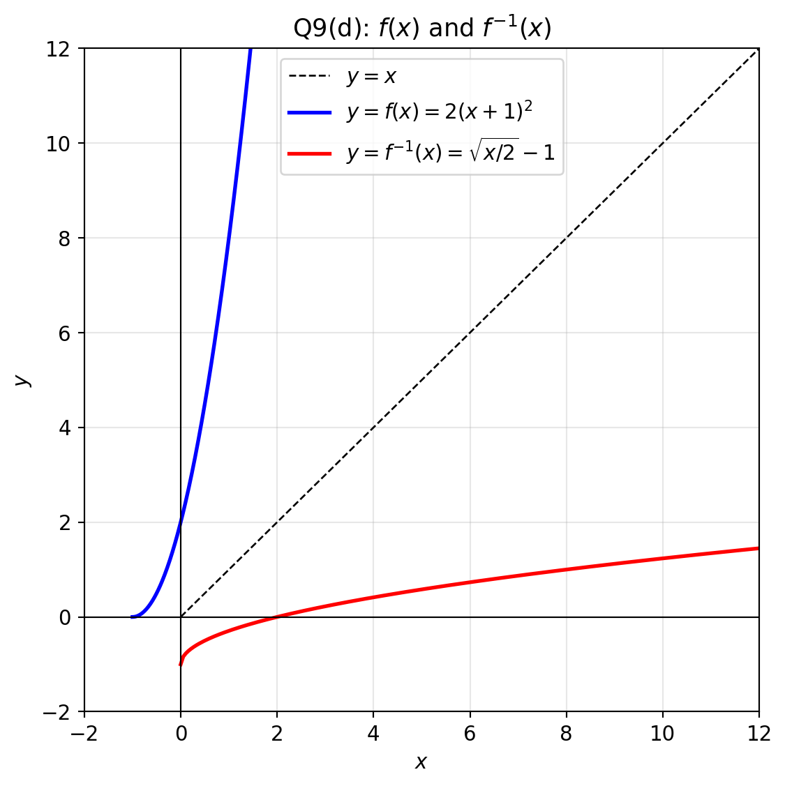
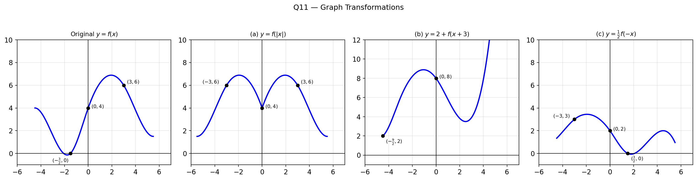
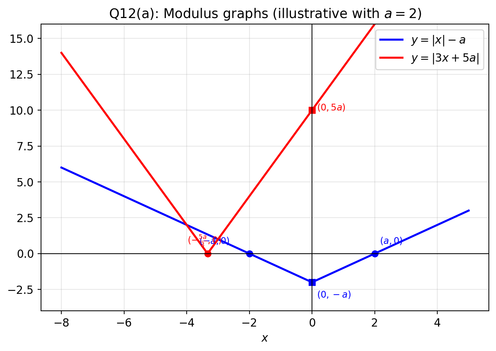

Review Exercise — A-Level Mathematics
Q1 — Algebraic Fractions
(a) Express \(\dfrac{5(x-3)(x+1)}{(x-12)(x+3)} - \dfrac{3(x+1)}{x-12}\) as a single fraction in its simplest form.
(b) Express \(\dfrac{x}{(x+1)(x+3)} - \dfrac{3(x+1)}{x^2-9}\) as a single fraction in its simplest form.
Solution
(a) Common denominator \((x-12)(x+3)\):
\[\frac{5(x-3)(x+1) - 3(x+1)(x+3)}{(x-12)(x+3)} = \frac{(x+1)[5(x-3)-3(x+3)]}{(x-12)(x+3)}\]
\[= \frac{(x+1)(2x-24)}{(x-12)(x+3)} = \frac{2(x+1)\cancel{(x-12)}}{\cancel{(x-12)}(x+3)} = \boxed{\dfrac{2(x+1)}{x+3}}\]
(b) Note \(x^2-9 = (x-3)(x+3)\). Common denominator \((x+1)(x+3)(x-3)\):
\[\frac{x(x-3) - 3(x+1)^2}{(x+1)(x+3)(x-3)} = \frac{x^2-3x-3x^2-6x-3}{(x+1)(x^2-9)} = \boxed{\dfrac{-(2x^2+9x+3)}{(x+1)(x^2-9)}}\]
Q2 — Exponential & Logarithm Equations (8)
Solve each equation, giving your answers in exact form.
(a) \(\ln(2x-3) = 1\) (3)
(b) \(3e^y + 5e^{-y} = 16\) (5)
Solution
(a) \[2x - 3 = e \implies \boxed{x = \tfrac{e+3}{2}} \tag{M1, A1, A1}\]
(b) Multiply by \(e^y\): \(3e^{2y} - 16e^y + 5 = 0 \implies (3e^y-1)(e^y-5) = 0\) \(\tag{M1, A1}\)
\[e^y = \tfrac{1}{3} \text{ or } e^y = 5 \implies \boxed{y = -\ln 3 \text{ or } y = \ln 5} \tag{A1, A1, A1}\]
Q3 — Logarithms (7)
(a) Simplify \(\dfrac{x^2+7x+12}{2x^2+9x+4}\). (3)
(b) Solve \(\ln(x^2+7x+12) - 1 = \ln(2x^2+9x+4)\), giving your answer in terms of e. (4)
Solution
(a) Factor both: \((x+3)(x+4)\) and \((2x+1)(x+4)\):
\[\frac{(x+3)\cancel{(x+4)}}{(2x+1)\cancel{(x+4)}} = \boxed{\dfrac{x+3}{2x+1}} \tag{M1, A1, A1}\]
(b) Rewrite: \(\ln\dfrac{x^2+7x+12}{2x^2+9x+4} = 1\). Using part (a):
\[\frac{x+3}{2x+1} = e \implies x+3 = 2ex+e \implies x(1-2e) = e-3\]
\[\boxed{x = \dfrac{e-3}{1-2e} = \dfrac{3-e}{2e-1}} \tag{M1, M1, A1, A1}\]
Q4 — Simultaneous Equations (8)
Simultaneous equations = 연립방정식
Giving your answers to 2 decimal places, solve the simultaneous equations:
\[e^{2y} - x + 2 = 0\] \[\ln(x+3) - 2y - 1 = 0\]
Solution
From equation 1: \(x = e^{2y}+2\). Substitute into equation 2: \(\tag{M1}\)
\[\ln(e^{2y}+5) = 2y+1 \implies e^{2y}+5 = e^{2y+1} = e\cdot e^{2y} \tag{M1, A1}\]
\[e^{2y}(e-1) = 5 \implies e^{2y} = \frac{5}{e-1} \tag{M1}\]
\[y = \tfrac{1}{2}\ln\!\left(\tfrac{5}{e-1}\right) \approx \boxed{0.53} \qquad x = \frac{5}{e-1}+2 \approx \boxed{4.91} \tag{A1, A1, A1, A1}\]
Q5 — Algebraic Fractions (9)
(a) Express \(\dfrac{x-10}{(x-3)(x+4)} - \dfrac{x-8}{(x-3)(2x-1)}\) as a single fraction in its simplest form. (5)
(b) Hence, show that the equation \(\dfrac{x-10}{(x-3)(x+4)} - \dfrac{x-8}{(x-3)(2x-1)} = 1\) has no real roots. (4)
Solution
(a) Common denominator \((x-3)(x+4)(2x-1)\):
\[\frac{(x-10)(2x-1)-(x-8)(x+4)}{(x-3)(x+4)(2x-1)}\]
Numerator: \((2x^2-21x+10)-(x^2-4x-32) = x^2-17x+42 = (x-3)(x-14)\) \(\tag{M1, A1, A1}\)
\[= \frac{\cancel{(x-3)}(x-14)}{\cancel{(x-3)}(x+4)(2x-1)} = \boxed{\dfrac{x-14}{(x+4)(2x-1)}} \tag{M1, A1}\]
(b) Set equal to 1: \(x-14 = (x+4)(2x-1) = 2x^2+7x-4\)
\[2x^2+6x+10 = 0 \implies x^2+3x+5 = 0 \tag{M1, A1}\]
Discriminant: \(9-20 = -11 < 0\) → no real roots \(\blacksquare\) \(\tag{A1, A1}\)
Q6 — Exponential & Logarithm Equations (7)
Solve each equation, giving your answers in exact form.
(a) \(e^{4x-3} = 2\) (3)
(b) \(\ln(2y-1) = 1 + \ln(3-y)\) (4)
Solution
(a) \(4x-3 = \ln 2 \implies \boxed{x = \dfrac{3+\ln 2}{4}}\) \(\tag{M1, A1, A1}\)
(b) \(\ln\dfrac{2y-1}{3-y} = 1 \implies \dfrac{2y-1}{3-y} = e \implies 2y-1 = 3e-ey\) \(\tag{M1, A1}\)
\[y(2+e) = 3e+1 \implies \boxed{y = \dfrac{3e+1}{e+2}} \tag{M1, A1}\]
Q7 — Functions & Inverses
(a) The function \(f\) is defined by \(f: x \mapsto \dfrac{3x-1}{x-3}\), \(x \in \mathbb{R}\), \(x \neq 3\).
(i) Prove that \(f^{-1}(x) = f(x)\) for all \(x \in \mathbb{R}\), \(x \neq 3\).
(ii) Hence find, in terms of \(k\), \(ff(k)\), where \(x \neq 3\).
(b) Show that a function of the form \(f: x \mapsto \dfrac{x+a}{x-1}\), \(x \in \mathbb{R}\), \(x \neq -1\), is self-inverse for all values of \(a\) except one. Find the exceptional value of \(a\).
Solution
(a)(i) Let \(y = \dfrac{3x-1}{x-3}\). Rearrange for \(x\):
\[y(x-3) = 3x-1 \implies xy-3y = 3x-1 \implies x(y-3) = 3y-1 \implies x = \frac{3y-1}{y-3}\]
So \(f^{-1}(x) = \dfrac{3x-1}{x-3} = f(x) \quad \blacksquare\)
(a)(ii) Since \(f^{-1} = f\), applying \(f\) twice gives the identity: \(ff(k) = k\)
(b) Compute \(f(f(x))\):
\[f\!\left(\frac{x+a}{x-1}\right) = \frac{\frac{x+a}{x-1}+a}{\frac{x+a}{x-1}-1} = \frac{x+a+a(x-1)}{x+a-(x-1)} = \frac{x(1+a)}{a+1}\]
This equals \(x\) provided \(a+1 \neq 0\), i.e., \(a \neq -1\).
When \(a = -1\): \(f(x) = \dfrac{x-1}{x-1} = 1\) (constant — not self-inverse).
Exceptional value: \(a = -1\).
Q8 — Functions (6)
\[f(x) \equiv \frac{2x-3}{x-2}, \quad x \in \mathbb{R},\ x > 2\]
(a) Find the range of f. (2)
(b) Show that \(ff(x) = x\) for all \(x > 2\). (3)
(c) Hence, write down an expression for \(f^{-1}(x)\). (1)
Solution
(a) Write \(f(x) = 2 + \dfrac{1}{x-2}\). For \(x > 2\): \(\dfrac{1}{x-2} > 0\), so \(f(x) > 2\).
Range: \(f > 2\) (i.e., \((2, \infty)\)) \(\tag{M1, A1}\)
(b) \[ff(x) = f\!\left(\frac{2x-3}{x-2}\right) = \frac{2\cdot\frac{2x-3}{x-2}-3}{\frac{2x-3}{x-2}-2} = \frac{2(2x-3)-3(x-2)}{(2x-3)-2(x-2)} = \frac{x}{1} = x \quad \blacksquare \tag{M1, A1, A1}\]
(c) Since \(ff(x)=x\): \(\quad f^{-1}(x) = f(x) = \dfrac{2x-3}{x-2}\) \(\tag{B1}\)
Q9 — Functions, Transformations & Inverse (13)
\[f(x) \equiv 2x^2 + 4x + 2, \quad x \in \mathbb{R},\ x \geq -1\]
(a) Express \(f(x)\) in the form \(a(x+b)^2 + c\). (2)
(b) Describe fully two transformations that would map the graph of \(y = x^2\), \(x \geq 0\) onto the graph of \(y = f(x)\). (3)
(c) Find an expression for \(f^{-1}(x)\) and state its domain. (4)
(d) Sketch the graphs of \(y = f(x)\) and \(y = f^{-1}(x)\) on the same diagram and state the relationship between them. (4)
Solution
(a) \[2x^2+4x+2 = 2(x^2+2x)+2 = 2(x+1)^2-2+2 = \boxed{2(x+1)^2} \tag{M1, A1}\]
(b) 1. Translation of 1 unit in the negative \(x\)-direction (left): \(y = x^2 \to y = (x+1)^2\), domain shifts to \(x \geq -1\). \(\tag{B1}\) 2. Stretch parallel to the \(y\)-axis, scale factor 2: \(y = (x+1)^2 \to y = 2(x+1)^2\). \(\tag{B1, B1}\)
(c) Let \(y = 2(x+1)^2\), \(x \geq -1\) (so \(y \geq 0\)):
\[x+1 = \sqrt{\frac{y}{2}} \implies x = \sqrt{\frac{y}{2}}-1\]
\[\boxed{f^{-1}(x) = \sqrt{\tfrac{x}{2}}-1, \quad \text{domain: } x \geq 0} \tag{M1, A1, A1, A1}\]
(d)
The graphs are reflections of each other in the line \(y = x\). \(\tag{B1 \times 4}\)
Q10 — Composite Functions & Inverse (12)
\[f: x \to 3e^{x-1}, \quad x \in \mathbb{R}\]
(a) State the range of f. (1)
(b) Find an expression for \(f^{-1}(x)\) and state its domain. (4)
The function \(g\) is defined by \(g: x \to 5x-2\), \(x \in \mathbb{R}\). Find, in terms of e,
(c) the value of \(gf(\ln 2)\), (3)
(d) the solution of the equation \(f^{-1}g(x) = 4\). (4)
Solution
(a) Range of f: \(\{f(x) : f(x) > 0\}\), i.e., \((0, \infty)\) \(\tag{B1}\)
(b) Let \(y = 3e^{x-1}\): \(e^{x-1} = \dfrac{y}{3} \implies x = 1 + \ln\dfrac{y}{3}\)
\[\boxed{f^{-1}(x) = 1 + \ln\tfrac{x}{3}, \quad \text{domain: } x > 0} \tag{M1, A1, A1, A1}\]
(c) \[f(\ln 2) = 3e^{\ln 2 - 1} = 3 \cdot \frac{2}{e} = \frac{6}{e} \tag{M1, A1}\] \[gf(\ln 2) = g\!\left(\tfrac{6}{e}\right) = \frac{30}{e}-2 = \boxed{\frac{30-2e}{e}} \tag{A1}\]
(d) \(f^{-1}(g(x)) = 4 \implies f^{-1}(5x-2) = 4\):
\[1 + \ln\frac{5x-2}{3} = 4 \implies \ln\frac{5x-2}{3} = 3 \implies \frac{5x-2}{3} = e^3 \tag{M1, A1}\]
\[\boxed{x = \dfrac{3e^3+2}{5}} \tag{A1, A1}\]
Q11 — Graph Transformations (11)

Figure 1 shows \(y = f(x)\) with minimum \(\left(-\dfrac{3}{2}, 0\right)\), maximum \((3, 6)\), crossing the \(y\)-axis at \((0, 4)\).
Sketch each of the following, showing coordinates of turning points and axis intercepts.
(a) \(y = f(|x|)\) (3)
(b) \(y = 2 + f(x+3)\) (4)
(c) \(y = \dfrac{1}{2}f(-x)\) (4)
Solution
| Transform | Rule | Key points |
|---|---|---|
| (a) \(f(\|x\|)\) | Reflect right half in \(y\)-axis; left half is mirror image of right | Max \((\pm 3, 6)\); y-int \((0,4)\); left min removed |
| (b) \(2+f(x+3)\) | Translate \(\leftarrow 3\), \(\uparrow 2\) | Min \((-\frac{9}{2}, 2)\); max \((0, 8)\) (new y-int); no \(x\)-intercepts since \(y \geq 2\) |
| (c) \(\frac{1}{2}f(-x)\) | Reflect in \(y\)-axis; compress \(y\) by factor \(2\) | Min \((\frac{3}{2}, 0)\); max \((-3, 3)\); y-int \((0, 2)\) |
Q12 — Modulus Graphs & Equations (10)
(a) Sketch on the same diagram the graphs of \(y = |x| - a\) and \(y = |3x+5a|\), where \(a\) is a positive constant. Show the coordinates of any points where each graph meets the coordinate axes. (6)
(b) Solve the equation \(|x| - a = |3x+5a|\). (4)
Solution
(a)

(b) Consider cases based on sign of \(x\) and \(3x+5a\).
Case: \(x < 0\) and \(3x+5a \geq 0\) (i.e., \(-\frac{5a}{3} \leq x < 0\)):
\[-x - a = 3x + 5a \implies -4x = 6a \implies x = -\tfrac{3a}{2}\]
Check: \(-\frac{5a}{3} < -\frac{3a}{2} < 0\) ✓ (valid)
Case: \(x < 0\) and \(3x+5a < 0\) (i.e., \(x < -\frac{5a}{3}\)):
\[-x - a = -(3x+5a) \implies -x-a = -3x-5a \implies 2x = -4a \implies x = -2a\]
Check: \(-2a < -\frac{5a}{3}\) ✓ (valid)
Case: \(x \geq 0\):
\[x - a = 3x + 5a \implies -2x = 6a \implies x = -3a \quad (\text{invalid since } x \geq 0, a > 0)\]
\[\boxed{x = -\tfrac{3a}{2} \quad \text{or} \quad x = -2a} \tag{A1, A1, A1, A1}\]
Q13 — Trigonometric Identities
Prove the following identities.
Solution
(a) \(\dfrac{\cos 2A}{\cos A+\sin A} \equiv \cos A - \sin A\)
\[\text{LHS} = \frac{\cos^2 A-\sin^2 A}{\cos A+\sin A} = \frac{(\cos A+\sin A)(\cos A-\sin A)}{\cos A+\sin A} = \cos A-\sin A \quad \blacksquare\]
(b) \(\dfrac{\sin B}{\sin A} - \dfrac{\cos B}{\cos A} \equiv 2\csc 2A\sin(B-A)\)
\[\text{LHS} = \frac{\sin B\cos A-\cos B\sin A}{\sin A\cos A} = \frac{\sin(B-A)}{\frac{1}{2}\sin 2A} = 2\csc 2A\sin(B-A) \quad \blacksquare\]
(c) \(\dfrac{1-\cos 2\theta}{\sin 2\theta} \equiv \tan\theta\)
\[\frac{2\sin^2\theta}{2\sin\theta\cos\theta} = \frac{\sin\theta}{\cos\theta} = \tan\theta \quad \blacksquare\]
(d) \(\dfrac{\sec^2\theta}{1-\tan^2\theta} \equiv \sec 2\theta\)
\[\frac{1/\cos^2\theta}{(\cos^2\theta-\sin^2\theta)/\cos^2\theta} = \frac{1}{\cos 2\theta} = \sec 2\theta \quad \blacksquare\]
(e) \(2(\sin^3\theta\cos\theta+\cos^3\theta\sin\theta) \equiv \sin 2\theta\)
\[2\sin\theta\cos\theta(\sin^2\theta+\cos^2\theta) = 2\sin\theta\cos\theta = \sin 2\theta \quad \blacksquare\]
(f) \(\dfrac{\sin 3\theta}{\sin\theta} - \dfrac{\cos 3\theta}{\cos\theta} \equiv 2\)
Step 1. 통분 — 분모를 \(\sin\theta\cos\theta\)로 맞춤:
\[\frac{\sin 3\theta\cos\theta - \cos 3\theta\sin\theta}{\sin\theta\cos\theta}\]
Step 2. 분자는 sine의 차 공식 \(\sin(A-B) = \sin A\cos B - \cos A\sin B\) 역방향:
\[= \frac{\sin(3\theta - \theta)}{\sin\theta\cos\theta} = \frac{\sin 2\theta}{\sin\theta\cos\theta}\]
Step 3. 분모를 double angle 공식으로 변환 — \(\sin 2\theta = 2\sin\theta\cos\theta\):
\[= \frac{\sin 2\theta}{\frac{1}{2}\sin 2\theta} = 2 \quad \blacksquare\]
(g) \(\csc\theta - 2\cot 2\theta\cos\theta \equiv 2\sin\theta\)
Step 1. 정의로 풀어쓰기 — \(\csc\theta = \dfrac{1}{\sin\theta}\), \(\cot 2\theta = \dfrac{\cos 2\theta}{\sin 2\theta}\):
\[\frac{1}{\sin\theta} - \frac{2\cos 2\theta\cos\theta}{\sin 2\theta}\]
Step 2. \(\sin 2\theta = 2\sin\theta\cos\theta\) 대입해서 통분:
\[\frac{1}{\sin\theta} - \frac{2\cos 2\theta\cos\theta}{2\sin\theta\cos\theta} = \frac{1}{\sin\theta} - \frac{\cos 2\theta}{\sin\theta} = \frac{1 - \cos 2\theta}{\sin\theta}\]
Step 3. \(1 - \cos 2\theta = 2\sin^2\theta\) 적용:
\[= \frac{2\sin^2\theta}{\sin\theta} = 2\sin\theta \quad \blacksquare\]
(h) \(\dfrac{\sec\theta-1}{\sec\theta+1} \equiv \tan^2\dfrac{\theta}{2}\)
Step 1. \(\sec\theta = \dfrac{1}{\cos\theta}\) 로 바꿔서 분모/분자 정리:
\[\frac{1/\cos\theta - 1}{1/\cos\theta + 1} = \frac{1 - \cos\theta}{1 + \cos\theta}\]
Step 2. half-angle 공식 적용 — \(1-\cos\theta = 2\sin^2\!\tfrac{\theta}{2}\), \(1+\cos\theta = 2\cos^2\!\tfrac{\theta}{2}\):
\[= \frac{2\sin^2(\theta/2)}{2\cos^2(\theta/2)} = \tan^2\frac{\theta}{2} \quad \blacksquare\]
Half-angle 공식 유도: \(\cos 2\alpha = 1 - 2\sin^2\alpha\) 에서 \(\alpha = \theta/2\) 로 놓으면 \(1 - \cos\theta = 2\sin^2(\theta/2)\). 같은 방식으로 \(\cos 2\alpha = 2\cos^2\alpha - 1\) 에서 \(1 + \cos\theta = 2\cos^2(\theta/2)\).
(i) \(\tan\!\left(\dfrac{\pi}{4}-x\right) \equiv \dfrac{1-\sin 2x}{\cos 2x}\)
Step 1. \(\tan\!\left(\dfrac{\pi}{4} - x\right)\)에 tan 차 공식 적용 — \(\tan\!\left(\dfrac{\pi}{4}\right) = 1\):
\[= \frac{1 - \tan x}{1 + \tan x}\]
Step 2. \(\tan x = \dfrac{\sin x}{\cos x}\) 로 바꿔서 분자/분모에 \(\cos x\) 곱하기:
\[= \frac{\cos x - \sin x}{\cos x + \sin x}\]
Step 3. 분자/분모에 \((\cos x - \sin x)\)를 곱해서 분자를 제곱 형태로 만들기:
\[= \frac{(\cos x - \sin x)^2}{\cos^2 x - \sin^2 x} = \frac{\cos^2 x - 2\sin x\cos x + \sin^2 x}{\cos^2 x - \sin^2 x}\]
Step 4. \(\cos^2 x + \sin^2 x = 1\), \(2\sin x\cos x = \sin 2x\), \(\cos^2 x - \sin^2 x = \cos 2x\) 적용:
\[= \frac{1 - \sin 2x}{\cos 2x} \quad \blacksquare\]
Q14 — Trig Identity & Equation (11)
(a) Prove the identity \(2\cot 2x + \tan x \equiv \cot x\), \(x \neq \dfrac{n}{2}\pi\), \(n \in \mathbb{Z}\). (5)
(b) Solve, for \(0 \leq x < \pi\), the equation \(2\cot 2x + \tan x = \csc^2 x - 7\), giving your answers to 2 decimal places. (6)
Solution
(a)
\[2\cot 2x + \tan x = \frac{2\cos 2x}{\sin 2x} + \frac{\sin x}{\cos x} = \frac{2\cos 2x\cos x + \sin x\cdot 2\sin x\cos x}{2\sin x\cos^2 x}\]
Numerator: \(2\cos x(\cos 2x + \sin^2 x) = 2\cos x \cdot \cos^2 x = 2\cos^3 x\)
\[= \frac{2\cos^3 x}{2\sin x\cos^2 x} = \frac{\cos x}{\sin x} = \cot x \quad \blacksquare\]
(b) Using (a): \(\cot x = \csc^2 x - 7\)
\[\frac{\cos x}{\sin x} = \frac{1}{\sin^2 x} - 7 \implies \sin x\cos x = 1-7\sin^2 x\]
\[\tfrac{1}{2}\sin 2x = 1 - \tfrac{7(1-\cos 2x)}{2} \implies \sin 2x - 7\cos 2x = -5\]
Write \(\sin 2x - 7\cos 2x = 5\sqrt{2}\sin(2x-\phi)\) where \(\tan\phi = 7\), \(\phi = \arctan 7 \approx 1.4289\):
\[\sin(2x-\phi) = \frac{-5}{5\sqrt{2}} = -\frac{1}{\sqrt{2}}\]
For \(0 \leq x < \pi\) (i.e., \(-\phi \leq 2x-\phi < 2\pi-\phi\)):
\[2x-\phi = -\frac{\pi}{4} \implies x = \frac{\phi-\pi/4}{2} \approx \boxed{0.32}\]
\[2x-\phi = \frac{5\pi}{4} \implies x = \frac{\phi+5\pi/4}{2} \approx \boxed{2.68}\]
Q15 — Differentiation (Find \(f'(x)\))
| \(f(x)\) | \(f'(x)\) | |
|---|---|---|
| a) | \(x\cos x\) | \(\cos x - x\sin x\) |
| b) | \(x^2\sec 3x\) | \(x\sec 3x(2+3x\tan 3x)\) |
| c) | \(\dfrac{\tan 2x}{x}\) | \(\dfrac{2x\sec^2 2x-\tan 2x}{x^2}\) |
| d) | \(\sin^3 x\cos x\) | \(\sin^2 x(3\cos^2 x-\sin^2 x)\) |
| e) | \(\dfrac{x^2}{\tan x}\) | \(\dfrac{x(2\tan x - x\sec^2 x)}{\tan^2 x}\) |
| f) | \(\dfrac{1+\sin x}{\cos x}\) | \(\dfrac{1+\sin x}{\cos^2 x}\) |
| g) | \(e^{2x}\cos x\) | \(e^{2x}(2\cos x-\sin x)\) |
| h) | \(e^x\sec 3x\) | \(e^x\sec 3x(1+3\tan 3x)\) |
| i) | \(\dfrac{\sin 3x}{e^x}\) | \(e^{-x}(3\cos 3x-\sin 3x)\) |
| j) | \(e^x\sin^2 x\) | \(e^x\sin x(\sin x+2\cos x)\) |
| k) | \(\dfrac{\ln x}{\tan x}\) | \(\dfrac{\tan x - x\ln x\sec^2 x}{x\tan^2 x}\) |
| l) | \(\dfrac{e^{\sin x}}{\cos x}\) | \(\dfrac{e^{\sin x}(\cos^2 x+\sin x)}{\cos^2 x}\) |
Q16 — Differentiation (9)
Differentiate each of the following with respect to \(x\) and simplify.
(a) \(\cot x^2\) (2)
(b) \(x^2e^{-x}\) (3)
(c) \(\dfrac{\sin x}{3+2\cos x}\) (4)
Solution
(a) Chain rule: \(\boxed{-2x\csc^2(x^2)}\) \(\tag{M1, A1}\)
(b) Product rule: \(2xe^{-x} - x^2e^{-x} = \boxed{xe^{-x}(2-x)}\) \(\tag{M1, A1, A1}\)
(c) Quotient rule:
\[\frac{\cos x(3+2\cos x)-\sin x(-2\sin x)}{(3+2\cos x)^2} = \frac{3\cos x+2(\cos^2 x+\sin^2 x)}{(3+2\cos x)^2} = \boxed{\frac{3\cos x+2}{(3+2\cos x)^2}} \tag{M1, A1, M1, A1}\]
Q17 — Exponential Model (10)
The number of bacteria in a culture at time \(t\) hours is modelled by \(N = 2000e^{kt}\), where \(k\) is a constant.
Given that when \(t=3\), \(N=18\,000\), find:
(a) the value of \(k\) to 3 significant figures, (3)
(b) how long it takes for the number of bacteria to double, giving your answer to the nearest minute, (4)
(c) the rate at which the number of bacteria is increasing when \(t = 3\). (3)
Solution
(a) \(18000 = 2000e^{3k} \implies e^{3k} = 9 \implies k = \dfrac{\ln 9}{3} = \dfrac{2\ln 3}{3} \approx \boxed{0.732}\) \(\tag{M1, A1, A1}\)
(b) \(4000 = 2000e^{kt} \implies kt = \ln 2 \implies t = \dfrac{\ln 2}{k} = \dfrac{3\ln 2}{2\ln 3} \approx 0.946\) hours \(\tag{M1, A1}\)
\(0.946 \times 60 \approx 56.8\) minutes \(\approx \boxed{57 \text{ minutes}}\) \(\tag{M1, A1}\)
(c) \(\dfrac{dN}{dt} = kN\). At \(t=3\): \(\dfrac{dN}{dt} = \dfrac{2\ln 3}{3} \times 18000 = 12000\ln 3 \approx \boxed{13\,183 \text{ bacteria per hour}}\) \(\tag{M1, A1, A1}\)
Q18 — f(x) = 2x + sin x − 3 cos x (14)
\[f(x) = 2x + \sin x - 3\cos x\]
(a) Show that \(f(x) = 0\) has a root in the interval \([0.7, 0.8]\). (2)
(b) Find an equation for the tangent to \(y = f(x)\) at the point where it crosses the \(y\)-axis. (4)
(c) Find the values of the constants \(a\), \(b\), \(c\) where \(b > 0\) and \(0 < c < \dfrac{\pi}{2}\), such that \(f'(x) = a + b\cos(x-c)\). (4)
(d) Hence find the \(x\)-coordinates of the stationary points of \(y = f(x)\) in \(0 \leq x \leq 2\pi\), to 2 decimal places. (4)
Solution
(a) \(f(0.7) = 1.4+\sin(0.7)-3\cos(0.7) \approx 1.4+0.644-2.294 = -0.250 < 0\)
\(f(0.8) = 1.6+\sin(0.8)-3\cos(0.8) \approx 1.6+0.717-2.090 = +0.227 > 0\)
Sign change \(\Rightarrow\) root in \((0.7, 0.8)\) \(\blacksquare\) \(\tag{B1, B1}\)
(b) At \(x=0\): \(f(0) = -3\), point \((0,-3)\).
\(f'(x) = 2+\cos x+3\sin x\). \(f'(0) = 3\).
Tangent: \(\boxed{y = 3x-3}\) \(\tag{M1, A1, M1, A1}\)
(c) \(f'(x) = 2 + (\cos x + 3\sin x)\)
\(\cos x + 3\sin x = \sqrt{10}\cos(x-\arctan 3)\)
\[\boxed{a = 2,\quad b = \sqrt{10},\quad c = \arctan 3 \approx 1.249} \tag{M1, A1, A1, A1}\]
(d) \(f'(x) = 0 \Rightarrow \cos(x-c) = -\dfrac{2}{\sqrt{10}}\), so \(x - c = \pm\arccos\!\left(-\dfrac{2}{\sqrt{10}}\right) \approx \pm 2.246\)
\[x = c + 2.246 \approx \boxed{3.49}, \qquad x = c - 2.246 + 2\pi \approx \boxed{5.29} \tag{A1, A1, A1, A1}\]
Q19 — Curve: \(y = \sqrt{x} + e^{1-4x}\) (14)
The curve \(C\) has equation \(y = \sqrt{x} + e^{1-4x}\), \(x \geq 0\).
(a) Find an equation for the normal to the curve at \(\left(\dfrac{1}{4}, \dfrac{3}{2}\right)\). (4)
(b) Show that \(\alpha\) (the \(x\)-coordinate of the stationary point, \(0.5 < \alpha < 1\)) is a solution of \(x = \dfrac{1}{4}[1+\ln(8\sqrt{x})]\). (3)
(c) Use \(x_{n+1} = \dfrac{1}{4}[1+\ln(8\sqrt{x_n})]\) with \(x_0 = 1\) to find \(x_1, x_2, x_3, x_4\) to 3 decimal places. (3)
(d) Show that your value of \(x_4\) is \(\alpha\) correct to 3 decimal places. (2)
(e) Another attempt uses \(x_{n+1} = \dfrac{1}{64}e^{8x_n-2}\) with \(x_0 = 1\). Describe the outcome. (2)
Solution
(a) \(\dfrac{dy}{dx} = \dfrac{1}{2\sqrt{x}}-4e^{1-4x}\). At \(x=\frac{1}{4}\): \(\dfrac{dy}{dx} = 1-4 = -3\). \(\tag{M1, A1}\)
Normal slope \(= \frac{1}{3}\). Normal equation:
\[y-\tfrac{3}{2} = \tfrac{1}{3}\!\left(x-\tfrac{1}{4}\right) \implies \boxed{12y = 4x+17} \tag{M1, A1}\]
(b) Set \(\dfrac{dy}{dx} = 0\): \(\dfrac{1}{2\sqrt{x}} = 4e^{1-4x} \Rightarrow e^{1-4x} = \dfrac{1}{8\sqrt{x}}\) \(\tag{M1}\)
Take ln: \(1-4x = -\ln(8\sqrt{x}) \Rightarrow 4x = 1+\ln(8\sqrt{x}) \Rightarrow x = \dfrac{1}{4}[1+\ln(8\sqrt{x})]\) \(\blacksquare\) \(\tag{A1, A1}\)
(c)
| \(n\) | \(x_n\) |
|---|---|
| 0 | 1.000 |
| 1 | 0.770 |
| 2 | 0.737 |
| 3 | 0.732 |
| 4 | 0.731 |
(d) Evaluate \(g(x) = \frac{1}{2\sqrt{x}}-4e^{1-4x}\) at \(x = 0.7305\) and \(x = 0.7315\):
\(g(0.7305) \approx -0.0003 < 0\) and \(g(0.7315) \approx +0.0015 > 0\)
Sign change \(\Rightarrow 0.7305 < \alpha < 0.7315\), so \(\alpha = 0.731\) to 3 d.p. \(\blacksquare\) \(\tag{M1, A1}\)
(e) \(x_1 = \frac{1}{64}e^6 \approx 6.3\) then \(x_2 \to \infty\). The sequence diverges — it does not converge to \(\alpha\). \(\tag{B1, B1}\)
Q20 — f(x) = x² + 5x − 2 sec x (11)
\[f(x) = x^2+5x-2\sec x, \quad x \in \mathbb{R},\ -\tfrac{\pi}{2} < x < \tfrac{\pi}{2}\]
(a) Show that \(f(x) = 0\) has a root in \([1, 1.5]\). (2)
(b) Find a suitable form for \(g(x)\) and use \(x_{n+1} = \arccos g(x_n)\) with \(x_0 = 1.25\) to find \(x_1, x_2, x_3, x_4\) to 3 decimal places. (6)
(c) Show that the \(x\)-coordinate of the stationary point \(P\) is \(1.0535\) correct to 5 significant figures. (3)
Solution
(a) \(f(1) = 1+5-2\sec(1) \approx 6-3.70 = 2.30 > 0\)
\(f(1.5) = 2.25+7.5-2\sec(1.5) \approx 9.75-28.3 = -18.5 < 0\)
Sign change \(\Rightarrow\) root in \((1, 1.5)\) \(\blacksquare\) \(\tag{B1, B1}\)
(b) \(f(x) = 0 \Rightarrow \cos x = \dfrac{2}{x(x+5)}\), so \(\boxed{g(x) = \dfrac{2}{x(x+5)}}\) \(\tag{M1, A1}\)
| \(n\) | \(x_n\) |
|---|---|
| 0 | 1.250 |
| 1 | 1.312 |
| 2 | 1.327 |
| 3 | 1.330 |
| 4 | 1.331 |
\(\tag{A1, A1, A1, A1}\)
(c) \(f'(x) = 2x+5-2\sec x\tan x\). Evaluate at boundaries \(1.05345\) and \(1.05355\):
\(f'(1.05345) < 0\) and \(f'(1.05355) > 0\) (sign change confirms root)
\(\Rightarrow\) stationary point \(x\)-coordinate \(= 1.0535\) to 5 s.f. \(\blacksquare\) \(\tag{M1, A1, A1}\)
Q21 — f(x) = 2x² + 3 ln(2 − x) (13)
\[f(x) = 2x^2+3\ln(2-x), \quad x \in \mathbb{R},\ x < 2\]
(a) Show that \(f(x) = 0\) can be written in the form \(x = 2-e^{kx^2}\), where \(k\) is a constant to be found. (3)
The root \(\alpha\) of \(f(x) = 0\) is \(1.9\) correct to 1 decimal place.
(b) Use \(x_{n+1} = 2-e^{kx_n^2}\) with \(x_0 = 1.9\) and your value of \(k\) to find \(\alpha\) to 3 decimal places and justify the accuracy of your answer. (5)
(c) Solve the equation \(f'(x) = 0\). (5)
Solution
(a) \(2x^2+3\ln(2-x) = 0 \Rightarrow \ln(2-x) = -\dfrac{2x^2}{3} \Rightarrow 2-x = e^{-2x^2/3}\) \(\tag{M1, A1}\)
\[\boxed{x = 2-e^{-2x^2/3}, \quad k = -\tfrac{2}{3}} \tag{A1}\]
(b) \(x_{n+1} = 2-e^{-2x_n^2/3}\), \(x_0 = 1.9\):
\(x_1 \approx 1.910\), \(x_2 \approx 1.912\), \(x_3 \approx 1.912\), \(x_4 \approx 1.913\)
To justify \(\alpha = 1.913\): \(\tag{A1, A1, A1}\)
\(f(1.9125) \approx +0.007 > 0\) and \(f(1.9135) \approx -0.020 < 0\)
Sign change \(\Rightarrow 1.9125 < \alpha < 1.9135\), so \(\alpha = 1.913\) to 3 d.p. \(\blacksquare\) \(\tag{M1, A1}\)
(c) \(f'(x) = 4x - \dfrac{3}{2-x} = 0 \Rightarrow 4x(2-x) = 3 \Rightarrow 4x^2-8x+3 = 0\) \(\tag{M1, A1}\)
\[(2x-1)(2x-3) = 0 \implies \boxed{x = \tfrac{1}{2} \text{ or } x = \tfrac{3}{2}} \tag{M1, A1, A1}\]
Q22 — Curve: \(y = x^2 - 5x + 2\ln\frac{x}{3}\) (8)
The curve \(C\) has equation \(y = x^2-5x+2\ln\dfrac{x}{3}\), \(x > 0\).
(a) Show that the normal to \(C\) at the point where \(x = 3\) has the equation \(3x+5y+21 = 0\). (5)
(b) Find the \(x\)-coordinates of the stationary points of \(C\). (3)
Solution
(a) At \(x=3\): \(y = 9-15+2\ln 1 = -6\). Point \((3,-6)\). \(\tag{B1}\)
\[\frac{dy}{dx} = 2x-5+\frac{2}{x}. \quad \text{At } x=3: \frac{dy}{dx} = 6-5+\frac{2}{3} = \frac{5}{3} \tag{M1, A1}\]
Normal slope \(= -\dfrac{3}{5}\). Normal: \(y+6 = -\dfrac{3}{5}(x-3)\) \(\tag{M1}\)
\[5y+30 = -3x+9 \implies 3x+5y+21 = 0 \quad \blacksquare \tag{A1}\]
(b) \(\dfrac{dy}{dx} = 0\): \(2x-5+\dfrac{2}{x} = 0 \Rightarrow 2x^2-5x+2 = 0 \Rightarrow (2x-1)(x-2) = 0\) \(\tag{M1, A1}\)
\[\boxed{x = \tfrac{1}{2} \quad \text{or} \quad x = 2} \tag{A1}\]